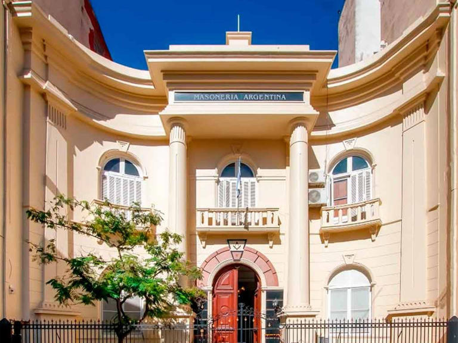
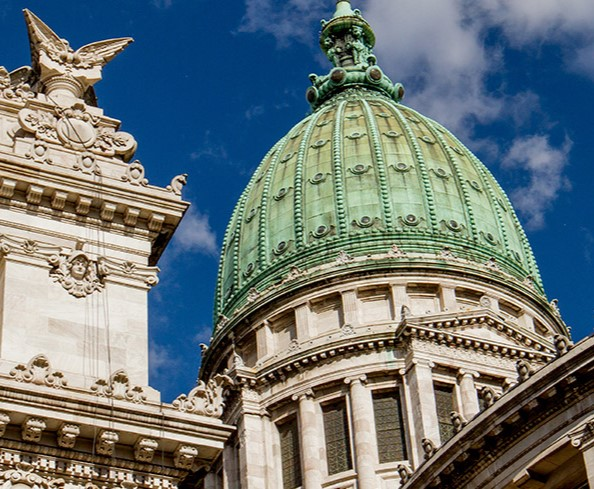
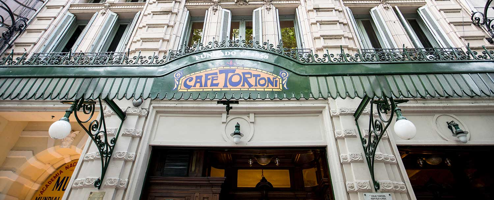
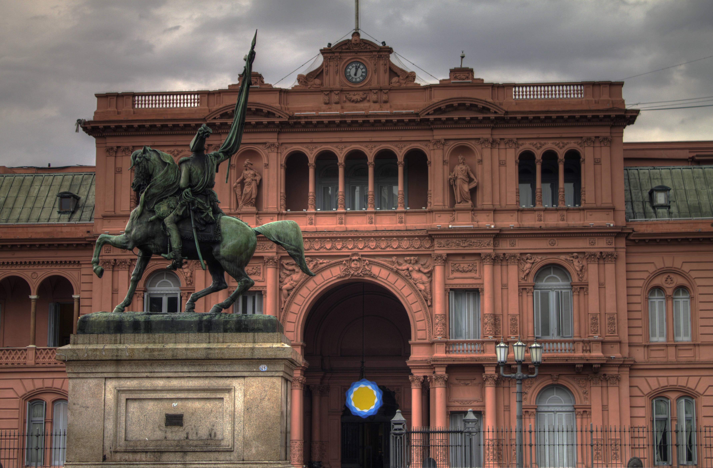

Tour Masónico por Buenos Aires
★ 4.9 (ver opiniones)




¿Qué haremos en este tour?
Desde el Congreso hasta el Café Tortoni y la Avenida de Mayo, descubre cómo Buenos Aires se construyó sobre los principios masónicos de iluminación, razón y simetría. Aprende a leer la ciudad como un templo de luz y geometría. Cada piedra, cada fachada, cada ángulo esconde una historia. Explora la red invisible que conecta los lugares más misteriosos de Buenos Aires.
Detalles del tour
🕰 Duración: 2 horas
🎧 Idioma: Inglés
💵 Tours privados o para grupos pequeños disponibles
Recorrido del tour
📍 Cementerio de la Recoleta - Donde los símbolos masónicos descansan en silencio
📍 Logia en la calle Perón - El corazón masónico de la ciudad
📍 Congreso - Geometría de poder y luz
📍 Café Tortoni - Punto de encuentro de poetas e iniciados
📍 Confitería del Molino - El templo art nouveau de la perfección
📍 Casa Rosada - Poder envuelto en simbolismo
📍 Palacio Barolo - ¿La Divina Comedia representada en un edificio?